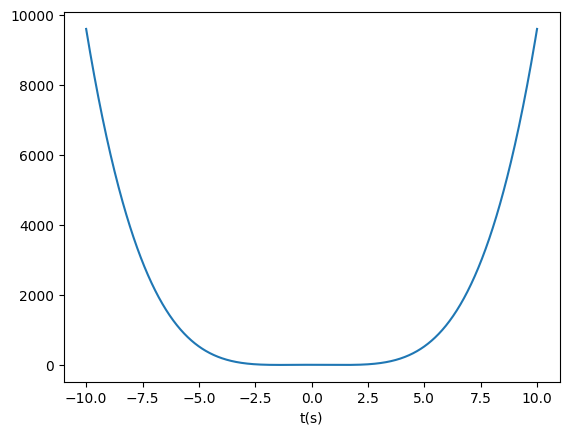

import numpy as np
import matplotlib.pyplot as plt
def f(x):
return x**4 - 4*x**2 + 4
t = np.linspace(-10, 10, 1000)
f_t = f(t)
plt.plot(t,f_t)
plt.xlabel("t(s)")Text(0.5, 0, 't(s)')
Determine the numerical derivative of the function f, represented as \(\left(\frac{df}{dt}\right)\), via finite difference approximation. Subsequently, contrast this result with the numerical evaluation of the symbolic derivative, derived through analytical differentiation, to assess the precision of the numerical approach
def f_hat(x):
return 4*(x**3) - 8*x
def shift(xs, n):
if n >= 0:
return np.concatenate((np.full(n, xs[0]), xs[:-n]))
else:
return np.concatenate((xs[-n:], np.full(-n, xs[-1])))
def f_hat_num(x,t):
delta = shift(t, -1) - t
salida = (shift(x, -1) - x) / np.mean(delta[:-1])
return np.concatenate((salida[:-1], [salida[-2]]))Determine the numerical integration of the function f, represented as \(\left(\int_{-10}^{10}{f(t)dt}\right)\), via trapezoidal rule. Subsequently, contrast this result with the numerical evaluation of the symbolic integral, derived through analytical differentiation, to assess the precision of the numerical approach
import sympy as sp
# Define the variable and the expression
x1 = sp.symbols("x1")
expr = x1**4 - 4 * x1**2 + 4
result = sp.integrate(expr, (x1, -10, 10)).evalf()
# Print the LaTeX representation
print(sp.latex(expr))
print(result)x_{1}^{4} - 4 x_{1}^{2} + 4
37413.3333333333# Define the limits of integration
a = -10
b = 10
# Define the number of subintervals
n = 100
# Calculate the width of each subinterval
h = (b - a) / n
# Initialize the sum
sum = 0.5 * (f(a) + f(b))
# Apply the Trapezoid Rule
for i in range(1, n):
sum += f(a + i * h)
# Calculate the integral
integral = h * sum
print("Approximate integral:", integral)Approximate integral: 37439.465599999996Solve the ODE \(\frac{dy}{dx} = 2x - 3y\) with initial condition y(0) = 1 using Euler’s Method. With a step 0f 0.1. Suppose that: \(x \in \left[0, 10\right]\) and \(y \in \left[1, 10\right]\)
# Define the derivative function
def f1(x, y):
return 2 * x - 3 * y
# Initial condition
x0 = 0
y0 = 1
# Step size
h = 0.1
# Total steps
n = int(10 / h)
# Create arrays to store x and y values
x = [0] * (n + 1)
y = [0] * (n + 1)
# Initialize x and y arrays
x[0] = x0
y[0] = y0
# Euler's Method
for i in range(n):
x[i + 1] = x[i] + h
y[i + 1] = y[i] + h * f1(x[i], y[i])Minimize the function f(x) = x^4 - 4x^2 + 4 using Gradient Descent.
# Initial guess
x0 = 10 * (np.random.rand() - 0.5)
# Learning rate
alpha = 0.01
# Number of iterations
n_iter = 1000
# Gradient Descent
xg = x0
for i in range(n_iter):
xg = xg - alpha * f_hat(xg)
# Print the minimum
print("Time of the minimum:", xg)
print("Function value at minimum:", f(xg))Time of the minimum: -1.4142135623730956
Function value at minimum: 8.881784197001252e-16